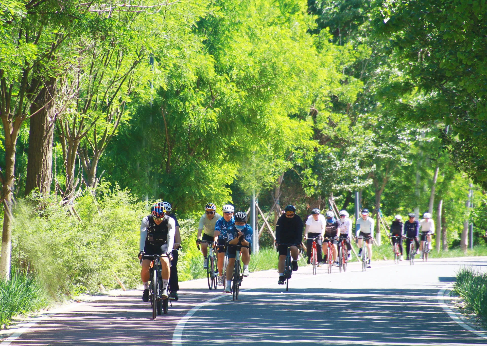
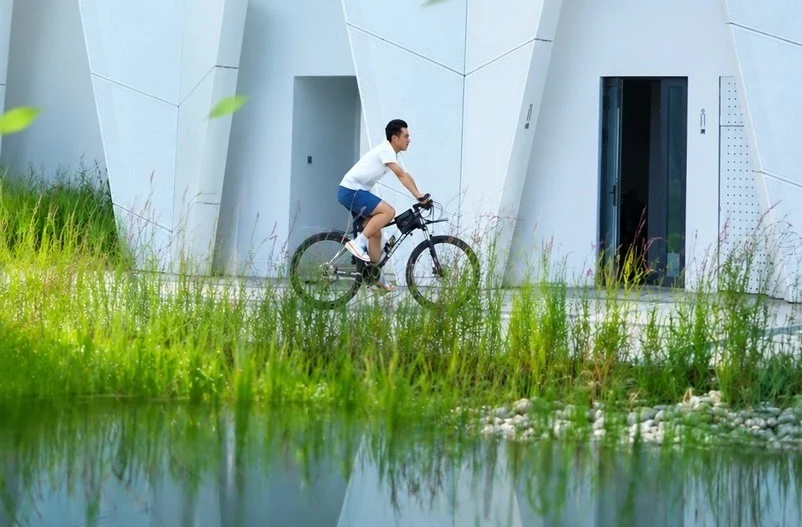
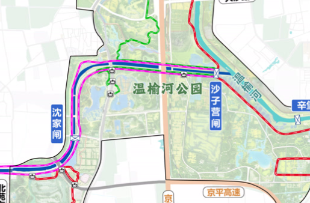

睡饱，吃好，再骑10公里。
下午的草地，留给桌游。
五道口晚出发 → 中餐／顺义特色西餐择一 → 沈家闸—沙子营闸，沿图中粉色段往返 → 周边新公园，自带下午茶。午餐只去一家，不串店。


一张行程卡
| 出发／自驾 | 五道口 → 所选午餐店 → 沈家闸附近合法停车点；具体停车场、收费与车架限高未知。 |
|---|---|
| 骑行主线 | 沈家闸 → 沿图中粉色段 → 沙子营闸 → 原路返回沈家闸。往返约10km沿用此前计划目标，非GPS实测；不延伸至京密路。 |
| 强度／用时 | 给骑行预留约75分钟，边骑边停；不能确认隔离安全路段时缩短或改步行，不为凑里程进入公共道路。 |
| 下午休息 | 周边新公园铺野餐垫，水果、零食、水和自带桌游。具体园名／入口与可铺垫区域待定。 |
| 午餐 | 7个分组、16家餐厅，中西餐都可选。评分平台、历史资料和未知项逐店区分。 |
新主线，不再套P20小环
本版按你指定的滨水往返线安排；之前P20/P21园内小环不再是本次主线。北京日报2026-09-23报道确认清河—温榆河滨水绿道部分路段开放，并提到沈家闸有座椅、卫生间。它是区域背景资料；本次起终点与粉色段以你提供的路线图为准。
开放绿道不等于全程无车。同篇报道提醒部分路段分时段开放机动车；未说明本次逐段通行时段。10岁孩子不在公共道路骑行，家长陪同也不能替代此限制。
你已纠正终点为沙子营闸，不再采用此前“到京密路”的描述。截图没有比例尺或距离标注，约10km只保留为此前往返计划目标，不生成未经核验的轨迹。
🚲 沈家闸出发，原路回来
这是按用户截图纠正的路线，非GPS轨迹：从沈家闸沿粉色段，图面上先向上、再向右，到沙子营闸原路折返；不接着走其它颜色的延长线。
- 先停车再验路。导航搜索沈家闸，确认合法停车位、绿道入口、厕所和现场管理信息。沈家闸不是已核实停车场，不能默认闸站可停车。
- 核实儿童可骑边界，再决定是否出发。逐段确认隔离、禁机动车和骑行许可；遇机动车共用段、公共道路、封闭路口或无法确认时不继续，让孩子在已核安全区域活动或改步行。“绿道”名字不能作为安全证明。
- 沙子营闸折返，原路回来。按图中两闸之间的粉色段走，现场确认通行后骑行。往返约10km为计划目标；具体路口穿越方式、GPS长度与累计爬升尚未核实，不为了凑公里数延长路线。
- 骑完收车，再铺垫。周边新公园具体园名未定；确认允许铺垫后休息。如需跨公共道路，先装车再自驾，不让孩子骑路接驳。
你指定的路线图｜两闸之间的粉色段

北京日报：滨水绿道开放与沈家闸配套、部分路段机动车分时通行（2026-09-23）。区域报道不等于本次粉色段全程无车的证明。
仍待核：沈家闸附近停车点、逐段儿童准入与机动车时段、沙子营闸现场安全折返位置、新公园具体园名和可铺垫区。现场不能确认，就缩短骑行保留野餐桌游。
🎲 自带下午茶，桌游才是后半场
15:30—16:45：在周边新公园允许停留的区域铺野餐垫，吃水果、零食，玩自带桌游。具体园名／入口尚未提供，不擅自替换成P20、示范区或罗马湖公园。
- 必带：野餐垫、桌游、洗净水果、零食、饮水、保温杯、湿巾和垃圾袋；切好的水果放保冷袋，到吃时再取。
- 桌游：UNO、磁吸棋或一盒熟悉的便携桌游。可带小硬板便于在垫上摆牌；不依赖公园提供桌椅。
- 骑行装备：普通自行车、儿童车、全员头盔、打气筒／补胎工具、薄外套；先检查刹车、胎压与链条。
- 边界：不挡绿道、不贴河岸、不进入封闭草地，不点明火；能否铺垫以现场规定为准。风大、下雨或有天气预警时收牌改期或回家玩，不硬加咖啡店。
本次下午茶就是自带水果零食，不新增餐厅消费或咖啡站。历史茶咖信息只保留作查阅，不纳入本次行程。
一天节奏｜晚出发，下午骑行＋休息
7.5h为弹性预算，车程不是导航结果。顺义绕行午餐若超时，优先缩短骑行，保留野餐桌游；不把整表后移至天黑。
| 时间／时长 | 做什么 | 落地动作 |
|---|
出发前确认
- 午餐：逐店核实午市、位置、座位、停车、限高和报价；官方荐店、点评菜单、历史高分都不等于当天开门。
- 孩子：未满12岁不能在公共道路骑自行车；尤其留意滨水绿道分时段开放机动车的提示。
- 天气／光线：出行日未指定，不虚构天气。临行查北京气象预警，雷雨、大风、积水则改期；天暗前收车。
- 停留：新公园园名、草坪开放和厕所以现场核实为准；暂未查到确定的野餐点定位，不替你指定另一个公园。
🍽️ 商户信息卡｜7个分组，中餐与特色西餐
16家餐厅＋1家历史茶咖。大众点评、Trip.com和文旅推荐逐项标明，评分不混用，低样本高分不直接等同头部。环境榜≠口味榜，到店数≠评论量；不编造近期差评、团购、营业和桌游许可。
CARDS资料核对：2026-10-10 · 当天通行、天气和商户营业需临行复核。
餐饮研究JSON · 顺义西餐来源 · 返回首页